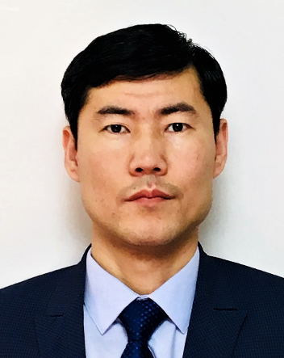
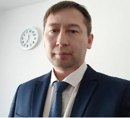
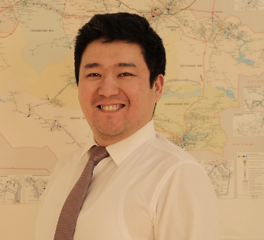
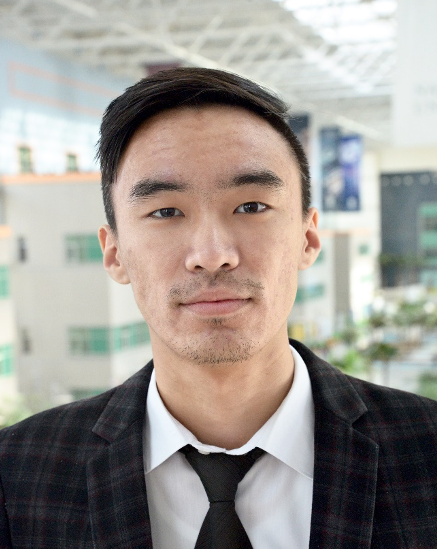

Zhakiev Nurkhat Kuandykovich, PhD in Physics
Head of Subtask RP-3. He is engaged in computer modeling of energy systems, predicting industrial greenhouse gas emissions, and climate change mitigation analytics. His main research topic is mathematical and computer modeling of physical processes, optimization and matrix algebra methods, and modeling in the GAMS environment. h-index=4, https://www.scopus.com/authid/detail.uri?authorId=56043145000
https://www.scopus.com/authid/detail.uri?authorId=56043145000

Bayandy Sarsembayev
Received the specialist qualification in Railway Automation and Control following with Candidate (PhD) Degree in Technical Sciences in Transport Operation from the Kazakh Academy of Transport and Communications, Almaty, Kazakhstan, in 2000 and 2005 respectively. He gained the M.Sc. degree in Systems and Control Engineering from City University of London, London, U.K., in 2015. He earned Ph.D. degree in Electrical Engineering and Electronics Research, Brunel University London, U.K. in February, 2023.

Alexandr Ten
Alexandr Ten gained Master of Engineering degree in Electrical and Computer Engineering from the University of British Columbia, Vancouver, Canada in 2021 under the “Bolashak” program. He earned Bachelor degree in Automation and Control, Karaganda State Technical University, Karagandy, Kazakhstan in 2008.

Akhmetov Yerbol
Received the B.Sc. and M.Sc. degree in electrical and electronic engineering at Nazarbayev University, Astana, Kazakhstan, in 2017 and 2019, respectively. He is currently pursuing research as a researcher in Department of Science and Innovation at Astana IT University (Astana, Kazakhstan) and in Electrical and Computer Engineering Department at Nazarbayev University (Astana, Kazakhstan). His research interests are frequency response analysis of transformers, transformer modeling, insulator diagnosis using computer vision and machine learning, analog circuit design, power transmission and energy modeling.